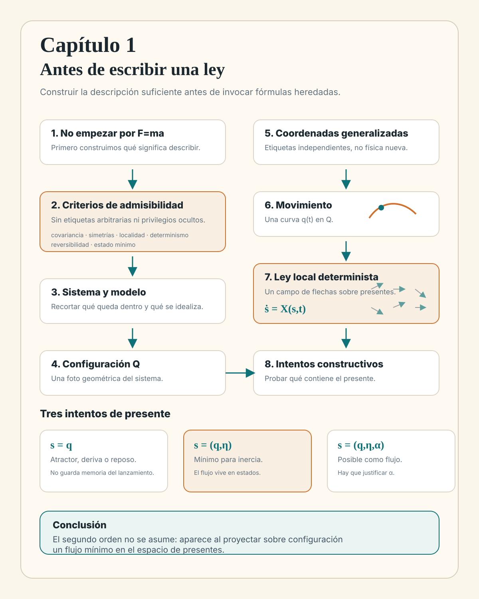

Históricamente la mecánica suele arrancar con F=ma. Aquí
haremos lo contrario: antes de aceptar una ecuación concreta,
construiremos el tipo de descripción sobre el que una ley podría
actuar: principios rectores, pregunta física, sistema, modelo,
configuración, grados de libertad, ley dinámica y estado mínimo.
En la enseñanza habitual de la mecánica, la primera gran frase
suele ser
\[
F=ma.
\]
Eso parece natural, pero si quieres entender la física desde
primeros principios introduce un sesgo muy fuerte desde el primer
minuto. Ya has aceptado que la ley va a escribirse en términos de
fuerzas, que la aceleración es el objeto central a predecir y que
el tipo de presente que necesita la teoría ya viene decidido.
Todo eso puede ser correcto para la mecánica ordinaria. Lo que no
conviene es fingir que cae del cielo.
En este capítulo vamos a hacer algo más lento y más limpio. En
lugar de empezar por la ecuación, vamos a construir el tipo de
descripción sobre el que una ley podría actuar.
Primero fijaremos algunos principios rectores: qué cosas no puede
decidir una elección de descripción y qué clase de leyes vamos a
estudiar. Después aclararemos qué fenómeno queremos explicar y qué
pregunta física estamos intentando responder. Luego decidiremos
qué parte del mundo cuenta como sistema. A continuación
construiremos un modelo: qué idealizaciones aceptamos, qué efectos
conservamos y qué dejamos fuera. Solo entonces hablaremos de
configuración, de grados de libertad, de coordenadas, de leyes
dinámicas y del estado mínimo que hace falta para continuar la
historia sin contradicciones.
La idea no es negar Newton. La idea es llegar a él sin meterlo por
la puerta trasera.
1.2 Principios rectores
Principios rectores: qué no puede decidir una descripción
Antes de empezar a recortar sistemas y escribir variables,
conviene fijar unas reglas de juego. No son axiomas absolutos
sobre todo lo que puede llamarse física. Son
criterios de admisibilidad para la clase de
mecánica que queremos construir: condiciones que no nos dicen
todavía cuál es la ley correcta, pero sí descartan leyes que han
metido estructura espuria.
No todos tienen el mismo estatuto. Algunos son higiene de
descripción, otros son simetrías del espacio y del tiempo, y otros
son hipótesis de trabajo sobre la clase de leyes que queremos
estudiar. Pero todos cumplen la misma función: si una ley los
viola, debe pagar el precio explicando qué estructura física
adicional ha introducido.
Covariancia descriptiva, o independencia de coordenadas.
La física no puede depender de nuestras etiquetas. Puedes
describir el mismo sistema con coordenadas cartesianas,
ángulos, distancias o cualquier otro sistema regular de
nombres. Las ecuaciones pueden cambiar de forma al cambiar de
coordenadas; lo que no puede cambiar es el contenido físico:
qué movimientos son posibles, cuántos grados de libertad hay
y qué predicciones se hacen. Una coordenada puede revelar la
estructura; no puede crearla.
Compatibilidad con las simetrías del modelo.
Si el modelo físico no distingue dos situaciones, la ley no
puede distinguirlas por su cuenta. Dicho de otro modo: una
simetría del sistema debe transformar soluciones admisibles en
soluciones admisibles. Ésta es la versión práctica del
principio de Curie: una asimetría en el comportamiento debe
venir de alguna asimetría en la situación física, no de la
notación.
Homogeneidad del espacio.
En espacio vacío, ningún punto está marcado. Una ley para un
sistema libre no puede señalar un origen, un centro o una
posición atractora salvo que el modelo contenga algo que haga
físicamente especial ese lugar: una pared, un anclaje, un
campo externo, un medio o una condición de contorno.
Isotropía del espacio.
En espacio vacío, ninguna dirección ni ningún sentido están
marcados. Una ley libre no puede traer incorporada una flecha
espacial universal. Si aparece una dirección privilegiada,
debe haber una estructura física que la sostenga: un campo,
una rotación externa, una guía, un flujo del medio o alguna
anisotropía real.
Homogeneidad del tiempo.
Para un sistema aislado, las reglas no deben depender del
instante elegido como origen temporal. Si haces hoy el mismo
experimento ideal que ayer, con la misma preparación física,
la ley no debería cambiar solo porque el reloj marque otro
valor. Una dependencia explícita del tiempo puede ser
legítima, pero entonces suele señalar algo externo: un motor,
una fuerza aplicada desde fuera, un parámetro que se modifica
o un entorno que no hemos incluido como parte del sistema.
Principio de relatividad galileana.
En mecánica no relativista, ningún sistema inercial debe ser
privilegiado. Si un laboratorio se mueve con velocidad
constante respecto de otro, las leyes mecánicas internas deben
tener la misma forma. Esto no dice que todas las velocidades
sean iguales dentro de una preparación; dice que una velocidad
uniforme común de todo el laboratorio no debe convertirse en
una propiedad absoluta del mundo. Más adelante este principio
será decisivo para entender por qué la partícula libre no
puede depender de \(v\) de cualquier manera.
Localidad temporal.
Una ley local decide la continuación inmediata usando
información del presente, no consultando toda la historia
pasada ni un tramo entero del futuro. La razón pedagógica para
empezar por leyes locales es simple: solo entonces tiene
sentido preguntar cuál es el paquete mínimo de datos que debe
contener el presente. Una ley no local no es absurda, pero
cambia el problema: la memoria que parecía faltar quizá vive
en una historia previa, en variables eliminadas o en
condiciones globales sobre la trayectoria completa.
Determinismo local, o unicidad de continuación.
Si dos historias comparten exactamente el mismo presente
físico suficiente, una ley determinista no puede hacerlas
separarse inmediatamente. Si se separan, o falta información
en el presente, o la ley no es determinista, o el modelo no
pertenece a la familia que estamos construyendo.
Reversibilidad temporal del núcleo ideal.
Para la mecánica ideal que tomaremos como punto de partida, no
basta con poder integrar una ecuación hacia atrás. Pediremos
algo más fuerte: si una película del movimiento es admisible,
la película invertida debe ser admisible en la misma clase de
ley, cambiando de signo las magnitudes impares bajo inversión
temporal. Cuando una descripción no es reversible, puede
seguir siendo útil: puede describir rozamiento, relajación,
promediado de variables o un sistema abierto. Pero entonces ya
no estamos viendo el núcleo mecánico desnudo, sino una
dinámica efectiva donde algo quedó fuera.
Completitud y minimalidad del estado.
El presente debe contener suficiente información física para
continuar la historia, pero no debe contener memoria libre sin
interpretación. Si una ley exige un dato inicial extra, hay que
preguntar qué entidad física representa ese dato. Si no
sabemos decirlo, quizá hemos escrito una descripción con
demasiada memoria, o quizá hemos eliminado grados de libertad
que deberían volver al modelo.
Estas reglas son potentes precisamente porque tienen forma
negativa. No dicen: “la ley debe ser tal fórmula”. Dicen: “dado
que la física no sabe qué coordenadas elegimos, no puede depender
de eso”; “dado que el espacio vacío es homogéneo e isótropo, no
puede aparecer un lugar ni una dirección especial sin causa
física”; “dado que queremos una ley local, la memoria necesaria
debe estar en el presente”; “dado que queremos una mecánica ideal
reversible, no basta con una regla que solo fluye en un sentido
del tiempo”.
Éste será el hilo conductor del capítulo. Cada vez que una
posibilidad parezca matemática pero sospechosa, preguntaremos qué
criterio está violando o qué estructura física nueva exige para
dejar de violarlo.
1.3 Pregunta física
Del fenómeno a la pregunta física
El mundo no viene dividido de antemano en problemas de mecánica.
Viene como fenómeno. Ves un péndulo oscilar, una bola subir y
bajar, un planeta recorrer el cielo o una molécula vibrar.
Pero todavía no hay una teoría. Ni siquiera hay un problema bien
formulado. Antes de escribir una ecuación hay que decidir qué
queremos explicar.
Con el mismo péndulo puedes hacer preguntas muy distintas. Puedes
querer calcular su periodo. Puedes querer saber cuándo se rompe el
hilo. Puedes estudiar cómo pierde energía por rozamiento. Puedes
investigar si el soporte vibra. Cada pregunta cambia qué detalles
son esenciales y cuáles pueden quedar, por ahora, fuera de foco.
Éste es el primer gesto constructivo: una descripción física no
empieza con símbolos, sino con una pregunta que da criterio al
recorte. Sin una pregunta, “simplificar” sería solo quitar cosas
al azar. Con una pregunta, simplificar puede convertirse en una
decisión controlada.
1.4 Sistema
Qué llamaremos sistema
Una vez tienes una pregunta, puedes aislar la
primera palabra importante: sistema.
Un sistema no es todavía una ecuación ni un conjunto de
coordenadas. Es la parte del mundo que has decidido poner dentro
del problema.
Si dices “voy a estudiar un péndulo”, puedes querer decir cosas
ligeramente distintas. Tal vez incluyes solo la masa y la varilla.
Tal vez añades el soporte. Tal vez dejas fuera el aire de la
habitación, las deformaciones microscópicas del material y todo lo
demás que no quieres seguir en detalle.
La cuestión no es que exista un único recorte correcto. La
cuestión es que siempre hay un recorte. Y ese recorte organiza
desde el principio lo que cuenta como interior y lo que queda
fuera.
Todo lo que dejas fuera puede seguir importando, pero ya no como
parte del sistema mismo. Entrará, si hace falta, como entorno,
como parámetro, como restricción o como influencia efectiva.
Antes de cualquier ley, la mecánica empieza con este acto de
contabilidad: decidir qué entra en el problema y qué queda fuera
de foco.
Demo interactiva: qué eliges como sistema
La visualización no introduce todavía una ley. Solo deja
visible que, al cambiar qué queda dentro del problema,
cambia también la clase de descripción geométrica que tendrá
sentido después.
Cambia entre partícula, péndulo y péndulo doble. El panel de
la izquierda representa el sistema elegido. El de la derecha
anticipa la clase de configuración natural que ese recorte va
a pedir.
partícula en una línea
1.5 Modelado
Modelar es decidir qué conservamos
Elegir el sistema todavía no basta. Una vez sabes qué parte del
mundo vas a estudiar, tienes que decidir con qué nivel de detalle
la vas a representar. A eso lo llamaremos aquí construir un
modelo.
Volvamos al péndulo. El péndulo real no es una bolita ideal
colgando de una línea perfecta. Hay rozamiento con el aire,
pequeñas vibraciones del soporte, elasticidad del hilo,
calentamiento imperceptible y mil detalles más.
Sin embargo, si la pregunta es entender el movimiento principal,
no hace falta cargar desde el principio con todo eso. Podemos
empezar por una versión más sobria del problema: una masa puntual,
una longitud fija y un ángulo \(\theta(t)\) que cambia con el
tiempo.
Eso es modelar. No negar que existan más efectos. Decidir cuáles
son los primeros que merece la pena conservar porque son los que
responden a la pregunta planteada. Una buena simplificación no es
una fantasía: es una versión del problema que todavía deja visible
lo esencial.
Y esto importa mucho para lo que vendrá después. Antes de elegir
ecuaciones, ya has elegido una pregunta, un sistema, unas
idealizaciones y una frontera entre lo que entra de forma explícita
y lo que queda como entorno o corrección. Esa primera poda
conceptual condiciona toda la teoría.
Demo interactiva: podar sin destruir la física principal
Esta visualización no añade teoría nueva. Solo hace visible
qué efectos secundarios dejas fuera y qué estructura mínima
conservas cuando idealizas.
Activa y desactiva rozamiento, vibración del soporte y
elasticidad. La pregunta buena es: ¿qué necesito conservar para
que el movimiento principal siga siendo reconocible?
modelo simple: \(\theta(t)\), \(\ell\) y gravedad
1.6 Configuración
Qué llamaremos configuración
Una vez fijado el sistema, la siguiente pregunta ya no es qué hay
dentro ni qué idealizaciones aceptas, sino cómo está colocado ese
sistema en un instante. A eso lo llamaremos
configuración.
Para una partícula en una línea, la configuración puede quedar
dada por \(x\). Para un péndulo, por el ángulo \(\theta\). Si
estudias muchas partículas sin vínculos, la configuración será el
conjunto de sus posiciones.
La configuración es, por así decir, la foto geométrica del
sistema. Te dice cómo está. No te dice todavía cómo está
cambiando.
La configuración responde a una pregunta geométrica:
qué forma tiene el sistema en ese instante. Todavía no
estamos preguntando si esa información basta o no para continuar
la historia.
El conjunto de todas las configuraciones admitidas por el modelo
se llama espacio de configuraciones. Lo
denotaremos a menudo por \(Q\). Cada configuración concreta es un
punto de \(Q\).
Esta idea es más importante de lo que parece. Si el modelo de
péndulo impone longitud fija, no todas las posiciones \((x,y)\)
del plano son configuraciones admitidas. La masa solo puede ocupar
puntos de una circunferencia. El espacio de configuraciones no es
entonces todo el plano: es la geometría que queda viva después de
imponer los vínculos del modelo.
La siguiente cuestión será ésta: cómo describir \(Q\) sin
redundancias. Ahí aparecerán los grados de libertad y las
coordenadas generalizadas.
1.7 Descripción
Las coordenadas son etiquetas, no física
Antes de elegir coordenadas, conviene volver al criterio de
covariancia descriptiva:
la física no puede depender de cómo etiquetamos las
configuraciones.
Una configuración es un punto de \(Q\). Las coordenadas son nombres
que ponemos a esos puntos. Pueden ser nombres muy útiles, o nombres
torpes, pero no son la cosa física misma.
Piensa en una ciudad. Puedes localizar el mismo lugar con una
dirección postal, con latitud y longitud o con coordenadas en un
mapa local. El lugar no cambia. Cambia el sistema de etiquetas.
Con un sistema mecánico ocurre lo mismo. Si una afirmación cambia
al cambiar de coordenadas, hay que sospechar: quizá no hemos
formulado todavía una afirmación física, sino una afirmación sobre
nuestra manera de describir.
Esto no significa que todas las coordenadas sean igual de buenas.
Una mala elección puede esconder vínculos, introducir redundancias
o hacer que una idea simple parezca complicada. Una buena elección,
en cambio, deja visible la geometría del problema. Pero la elección
no debe alterar el contenido físico.
Principio rector
La física no sabe cómo la hemos etiquetado.
1.8 Grados de libertad
Grados de libertad y coordenadas generalizadas
Una vez has fijado qué sistema estudias y cuál es su espacio de
configuraciones, todavía queda otra elección:
cómo parametrizar ese espacio. Y ahora el principio
anterior se vuelve operativo. No buscamos coordenadas porque la
física las necesite como objetos fundamentales. Las buscamos porque
necesitamos etiquetas que describan \(Q\) sin engañarnos.
Aquí conviene distinguir dos ideas que a veces se mezclan.
La primera es el grado de libertad: cuántos
parámetros independientes hacen falta para fijar la configuración.
La segunda es la coordenada generalizada: qué
etiquetas independientes vas a usar para describirla sin
redundancias.
En los ejemplos más simples, ambas cosas casi se confunden. Pero
en cuanto aparecen vínculos, la diferencia se vuelve decisiva.
Lo profundo aquí no es cuántos símbolos escribes al principio,
sino cuántos parámetros independientes hacen falta de verdad. Ese
número es el número de grados de libertad. Una vez lo conoces, una
elección de coordenadas generalizadas es una forma de etiquetar los
puntos de \(Q\) sin arrastrar redundancias innecesarias. No cambia
el sistema: cambia la claridad con que lo estamos nombrando.
Aquí actúan a la vez la
covariancia descriptiva y la
minimalidad de la descripción
física: escribir variables redundantes no crea nuevos grados
de libertad.
Piensa otra vez en el péndulo. Puedes describir la masa por sus
coordenadas cartesianas \((x,y)\). Eso es correcto. Pero
inmediatamente aparece una molestia: esas dos coordenadas no son
independientes, porque deben satisfacer
\[
x^2+y^2=\ell^2.
\]
En realidad, el sistema no tiene dos grados de libertad
efectivos. Tiene uno.
El ángulo \(\theta\) ve desde el principio lo que las coordenadas
cartesianas esconden: que las configuraciones admitidas viven
sobre una familia muy particular dentro del plano. Por eso
\(\theta\) es una buena coordenada generalizada: una variable
independiente basta para fijar la configuración efectiva.
El péndulo no se vuelve distinto al usar \(\theta\). Simplemente
dejamos de pedirle a la descripción que recuerde, mediante una
restricción, algo que la coordenada angular ya respeta desde el
principio.
Demo interactiva: péndulo simple
Aquí la visualización sirve para ver, no para introducir la
teoría: dos coordenadas escritas no implican dos grados de
libertad reales.
Mueve el ángulo y compara ambos paneles. A la izquierda ves
cartesianas con restricción. A la derecha, una coordenada
generalizada que ya incorpora la geometría del problema.
θ = 39°
Grado de libertad
Es el número de parámetros independientes que hacen
falta para fijar la configuración. En el péndulo simple,
ese número es \(1\).
Coordenadas redundantes
Las cartesianas \((x,y)\) sirven, pero esconden la
ligadura. No puedes elegir \(x\) e \(y\) libremente:
deben vivir sobre la circunferencia de radio \(\ell\).
Coordenada generalizada
El ángulo \(\theta\) ve desde el principio lo que las
cartesianas esconden: las configuraciones admitidas
viven sobre una familia muy particular dentro del plano.
En un sistema algo más rico, la diferencia entre una descripción
torpe y una descripción en coordenadas generalizadas se vuelve
mucho más visible.
Piensa en un péndulo doble.
Si insistes en describir las dos masas con coordenadas
cartesianas, empiezas con cuatro variables
\((x_1,y_1,x_2,y_2)\), pero luego debes imponer dos restricciones
de longitud fija:
La geometría real del sistema queda enterrada bajo coordenadas
redundantes y vínculos.
En cambio, si usas directamente dos ángulos
\((\theta_1,\theta_2)\), la configuración efectiva aparece desde
el principio: el sistema tiene dos grados de libertad, no cuatro.
Y eso no es solo una ventaja estética.
Demo interactiva: péndulo doble
El contraste relevante aquí no es “difícil vs fácil”, sino
“descripción redundante vs descripción en coordenadas
generalizadas y respetuosas con la
geometría real del sistema”.
Cambia \(\theta_1\) y \(\theta_2\). La demo deja visible que
escribir cuatro coordenadas no crea cuatro grados de libertad.
Lo que importa es cuántos parámetros independientes quedan
vivos después de imponer los vínculos.
θ₁ = 31°
θ₂ = 22°
Cartesiana + vínculos
Escribes cuatro coordenadas, pero dos de ellas quedan
atrapadas por los vínculos. El sistema no puede explorar
libremente el plano.
Grados de libertad efectivos
\(4\) coordenadas escritas menos \(2\) restricciones
independientes dejan \(2\) grados de libertad reales.
Coordenadas generalizadas
Los ángulos \((\theta_1,\theta_2)\) muestran desde el
principio qué puede cambiar de verdad. La descripción
sigue teniendo geometría rica, pero deja de estar
sepultada bajo redundancias.
En coordenadas generalizadas se vuelve mucho más visible la
geometría real del sistema: la posición de la segunda masa depende
de ambos ángulos, no de cuatro coordenadas libres. El péndulo
doble no es “dos puntos cualesquiera del plano”, sino una familia
de configuraciones construida por dos giros encadenados.
No hace falta desarrollar aquí el péndulo doble completo. Lo
importante es notar esto: cuando las coordenadas respetan la
geometría del sistema, la descripción empieza ordenada; cuando no
la respetan, primero peleas con redundancias y solo mucho después
puedes ver la física. La teoría que construiremos debe sobrevivir
a ese cambio de etiquetas.
1.9 Movimiento
Movimiento como curva en el espacio de configuraciones
Hasta ahora no hemos escrito ninguna ley. Solo hemos construido el
escenario. Tenemos un sistema, un modelo, un espacio de
configuraciones \(Q\) y unas coordenadas \(q\) que etiquetan sus
puntos.
¿Qué sería entonces un movimiento? Antes de hablar de fuerzas o de
acciones, un movimiento es simplemente una sucesión de
configuraciones: una curva en \(Q\). En símbolos,
\[
t \longmapsto q(t)\in Q.
\]
La notación \(q(t)\) no debe engañarnos. No significa que la
historia física dependa de una letra concreta \(q\). Significa que
hemos elegido unas coordenadas para seguir una curva en \(Q\). Otra
elección de coordenadas describiría la misma historia con otros
números.
Ésta es una distinción crucial. La cinemática te dice qué historias
tienen sentido geométrico: qué curvas podrían dibujarse en el
espacio de configuraciones. La dinámica todavía no ha hablado. La
dinámica será la regla que diga cuáles de esas historias son
físicamente posibles o cómo se prolonga una historia a partir de la
información presente.
Así aparece la siguiente pregunta de forma natural: no basta con
saber qué configuraciones existen; queremos saber qué reglas
seleccionan sus continuaciones.
1.10 Ley dinámica
Qué es una ley dinámica
Llegados aquí ya podemos formular mejor la pregunta. Una
ley dinámica es la regla que te dice cómo
evoluciona el sistema con el tiempo.
Esto parece obvio, pero conviene decirlo despacio. La
configuración por sí sola no produce el futuro. Hace falta además
una regla de evolución. Y esa regla puede tener formas muy
distintas.
La ley puede estar escrita como una ecuación diferencial, como un
mapa discreto o, más adelante, como una condición sobre historias
completas. Lo esencial no es el formato, sino la función que
cumple: relacionar el presente del sistema con su continuación.
Para entender qué debe contener el presente, empezaremos por una
familia especialmente limpia de leyes: leyes locales y
deterministas, escritas como ecuaciones diferenciales. No porque
toda la física tenga que tener esa forma, sino porque ahí se ve
con mucha claridad una idea esencial: una ley de este tipo solo
puede continuar el movimiento si el presente contiene toda la
información física que la continuación necesita.
Ésta es la primera aplicación operativa de los criterios de
localidad temporal y
determinismo local.
Aquí aparece una conexión importante con todo lo anterior. No
decides primero una lista de variables y luego obligas a la
naturaleza a obedecerla. El presente que buscas se aclara junto
con la clase de leyes que aceptas. Debe ser suficientemente rico
para que la ley no ramifique, pero no tan rico que guarde memoria
sin entidad física. Y esos datos deben entenderse como información
física mínima, no como apego a una coordenada particular.
Antes de usar esa familia de leyes, hay que aclarar qué estamos
comprando con las palabras “local” y “determinista”.
Demo interactiva: la ley como regla de continuación
El formato cambia, pero la función es la misma: prolongar un
presente admitido o, si ya estás en un lenguaje global,
seleccionar qué historia cuenta como posible.
Cambia de modo. En todos los casos conviene mirar la misma
idea: la ley no es un adorno algebraico, sino la regla que
decide cómo continúa el sistema.
continuación local a partir del presente
1.11 Hipótesis
Qué significan local y determinista
Ya hemos anunciado la
localidad temporal como
principio rector. Ahora hay que convertir esa palabra en una
condición operativa, porque de ella dependerá cuántos datos debe
contener el presente.
Aquí local quiere decir local en el tiempo. La
ley decide la continuación inmediata usando información del
presente, no una consulta a toda la historia pasada ni a un tramo
entero del futuro. Si en el instante \(t\) conoces los datos
físicos adecuados, la ley te dice qué ocurre en un intervalo
infinitesimal alrededor de \(t\).
Una ley no local en el tiempo sería de otra naturaleza. Podría
depender, por ejemplo, de una integral sobre todo el pasado o de
una condición global sobre la trayectoria completa. Eso no es
absurdo, pero cambia la pregunta. Ya no bastaría buscar un pequeño
paquete llamado “presente” que cierre por sí solo la predicción
local.
Aquí
determinista
quiere decir que, una vez fijado un presente admisible, la ley
selecciona una continuación única, al menos localmente en el
tiempo y bajo condiciones regulares. No estamos haciendo todavía
una afirmación metafísica sobre el universo. Estamos imponiendo
una condición operativa: si dos historias comparten exactamente el
mismo presente físico y la ley es determinista, no pueden
separarse inmediatamente sin que faltase algún dato en ese
presente.
Si la ley fuese probabilística, o si permitiese ramificación real
desde el mismo presente, el análisis cambiaría. Tendríamos que
hablar de distribuciones, amplitudes, reglas de transición o datos
ocultos. Todo eso puede ser física, pero no es la familia limpia
que queremos usar ahora para entender qué significa que un
presente contenga “lo suficiente”.
Con esto, la pregunta ya no es solo “¿qué hay que saber ahora?”.
Es también “¿qué clase de continuación local estamos pidiendo que
exista?”.
La forma geométrica de responder aparecerá en la sección
siguiente: representar un presente candidato como un punto,
dibujar en cada punto la flecha que la ley permite seguir y
comprobar si ese espacio de presentes era suficiente, físico y
mínimo.
1.12 Flujo local
Una ley local como campo de flechas
Ahora conviene cambiar el punto de vista. No empezaremos
comparando fórmulas del tipo “primer orden”, “segundo orden” o
“tercer orden”. Eso ya viene demasiado cargado de tradición.
Empezaremos con una pregunta más elemental:
qué vamos a aceptar como presente completo.
Llamemos \(s\) a ese presente candidato. Si la ley es local y
determinista, su forma mental más limpia es
\[
\dot s = X(s,t).
\]
Esto no dice todavía cuál es la ley correcta. Dice cómo debe
comportarse cualquier ley de esta familia: cada punto del espacio
de presentes recibe una flecha. Seguir esas flechas produce una
historia.
La imagen es muy concreta. Piensa en un campo de agua. En cada
punto hay una flecha que indica hacia dónde sería arrastrada una
partícula. En mecánica pasa lo mismo, pero el campo de flechas no
vive necesariamente en el espacio físico ordinario. Vive en el
espacio donde has decidido representar el presente completo del
sistema.
Para un sistema con una sola coordenada de configuración \(q\),
probaremos tres candidatos:
\[
\begin{array}{rcl}
\text{intento 1:} & s &= q,\\[0.3em]
\text{intento 2:} & s &= (q,\eta),\\[0.3em]
\text{intento 3:} & s &= (q,\eta,\alpha).
\end{array}
\]
Aquí \(\eta\) es solo un nombre neutral para un dato independiente
de cambio: aquello que distingue preparaciones que comparten la
misma configuración. Y \(\alpha\) representa un posible dato
adicional, cuya entidad física todavía tendríamos que justificar.
Esta forma de hablar evita un anclaje mental peligroso. La física
no empieza sabiendo que quiere una ecuación de segundo orden.
Primero pregunta qué datos hacen falta para que el presente pueda
continuar sin ambigüedad, sin meter estructura arbitraria y sin
recordar más de lo que el modelo puede explicar. El orden de la
ecuación aparece después, cuando proyectamos ese flujo sobre las
coordenadas de configuración.
Demo interactiva: una ley local como campo de flechas
La visualización fija la gramática común: eliges qué cuenta
como presente, pintas flechas sobre ese espacio y sigues una
curva.
Cómo leerla: el modo no cambia la idea de ley local. Cambia
el espacio sobre el que esa ley intenta pintar flechas:
configuración sola, configuración más dato de cambio, o un
presente todavía más grande.
el punto q intenta decidirlo todo
Espacio elegido
Una ley local no flota en abstracto: vive sobre el
espacio que has elegido para representar el presente.
Flecha local
Cada punto recibe una flecha \(\dot s=X(s,t)\). Si dos
presentes comparten punto, la ley no puede separarlos.
Criterio
El presente debe ser suficiente para no ramificar, pero
mínimo para no introducir memoria sin entidad física.
1.13 Intento 1
Solo configuración
Probemos primero el candidato más austero: el presente es solo la
configuración. Para una partícula en una línea, eso significa
\(s=x\). Una ley local determinista sobre ese espacio tendría la
forma
\[
\dot x=f(x,t).
\]
Si además hablamos de un sistema aislado, la
homogeneidad del
tiempo nos empuja a quitar la dependencia explícita del
instante elegido como origen. Queda entonces una ley autónoma:
\[
\dot x=u(x).
\]
En este intento, conocer \(x(t_0)\) bastaría. La propia ley
pintaría en cada punto de la recta la flecha de continuación. El
punto \(x\) decidiría por sí solo la velocidad.
Antes de seguir con la recta, conviene ver la misma idea en dos
dimensiones. Si el presente fuese solo la posición \(\mathbf r\)
en un plano, una ley local podría cubrir el plano con flechas que
apuntan hacia un punto \(A\). Por ejemplo,
Matemáticamente es una ley perfectamente local: cada punto trae su
flecha. Pero el dibujo ya delata el precio: \(\mathbf a\) no es un
punto cualquiera. La ley lo ha marcado como lugar especial. Eso
puede ser correcto si hay una estructura física allí; no puede
aparecer gratis en un espacio vacío homogéneo.
Demo interactiva: campo hacia un atractor
Todas las flechas se calculan desde la posición actual. El
punto marcado no es una etiqueta: es una estructura añadida
al modelo.
Cómo leerla: las flechas viven sobre el plano de
configuraciones. Si todas apuntan hacia \(A\), la ley ha
declarado que \(A\) es especial. Sin una causa física para ese
punto, se viola la homogeneidad del espacio.
\(k=0.95\)
Campo local
En cada punto, la posición basta para pintar la flecha.
No hay dato independiente de lanzamiento.
Lugar marcado
El atractor \(A\) selecciona una localización concreta
del plano. Eso es una estructura física adicional.
Criterio
En espacio vacío homogéneo no puede aparecer un punto
preferente solo porque la ecuación lo haya escrito.
Esto puede parecer razonable si pensamos en procesos de
relajación. Por ejemplo,
\[
\dot x=-kx,\qquad k>0,
\]
describe un movimiento que cae hacia \(x=0\). El punto \(x=0\) es
un atractor: si estás a la derecha, te mueves hacia la izquierda;
si estás a la izquierda, te mueves hacia la derecha. La posición
basta para saber hacia dónde va el sistema.
Ese ejemplo es útil, pero no debe engañarnos. Un atractor no es
“espacio vacío”. Un atractor señala una estructura física: un
equilibrio, un medio disipativo, un mecanismo de control, un baño
térmico, algo que distingue ese punto de los demás. Para muchos
sistemas efectivos eso está muy bien. Una variable que se relaja,
una partícula sobreamortiguada en un fluido o una temperatura que
se acerca a la del ambiente pueden tener leyes de primer orden muy
naturales. Pero eso no describe una partícula libre con inercia.
Aquí entran dos criterios rectores muy potentes:
homogeneidad del
espacio e isotropía del
espacio. Si hablamos de una partícula libre en un espacio sin
estructura, ningún lugar puede venir privilegiado por la ley. La
física no puede saber que \(x=0\) es especial si \(x=0\) solo es
el origen que hemos elegido en el papel. Por tanto, una ley libre
de primer orden no puede tener un \(u(x)\) que cambie de un punto
a otro, porque eso convertiría algunos lugares en físicamente
distintos.
Queda la posibilidad
\[
\dot x=c.
\]
Pero si la recta tampoco trae un sentido privilegiado, un
\(c\neq 0\) distingue derecha de izquierda. La ley habría
incorporado una especie de cinta transportadora universal. En
ausencia de un medio o de una estructura externa que marque esa
dirección, eso también es sospechoso. La única opción
completamente homogénea y sin sentido privilegiado sería
\[
\dot x=0.
\]
La homogeneidad elimina atractores arbitrarios; la isotropía
elimina una deriva universal.
Ésta es la conclusión fuerte: si la configuración es el único dato
del presente, una partícula verdaderamente libre no puede llevar
memoria de cómo fue lanzada. O bien todos los puntos caen hacia
algún atractor, lo cual introduce un lugar especial, o bien hay
una deriva incorporada, lo cual introduce un sentido especial, o
bien no se mueve nada.
Pero eso no es lo que observamos. Una bola lanzada hacia arriba
atraviesa la misma altura dos veces: una al subir y otra al bajar.
Un péndulo atraviesa el mismo ángulo con dos sentidos distintos.
Una partícula libre puede pasar por el mismo punto con velocidades
distintas. Por tanto, la velocidad no puede estar escrita ya en el
punto de configuración. Tiene que ser parte de la preparación
física del sistema.
Así que el problema del primer intento no es que sea
matemáticamente incoherente. El problema es que el espacio de
presentes elegido era demasiado pequeño. Sirve para procesos de
relajación o para modelos efectivos donde ya hemos eliminado la
inercia. No sirve como estructura básica de la mecánica
ordinaria.
Demo interactiva: el trilema del primer orden
La visualización no muestra una trayectoria concreta, sino
el callejón lógico de una ley que solo conoce la posición.
Cómo leerla: en cada fila, la posición \(x\) intenta decidir
por sí sola la velocidad. La pregunta no es si la ecuación se
puede escribir, sino qué estructura física introduce para
poder mover algo.
todas las salidas posibles rompen algo
Atractor
\(\dot x=-kx\) mueve, pero convierte \(x=0\) en un
lugar físico especial. Eso puede describir relajación,
no una partícula libre en espacio vacío.
Deriva
\(\dot x=c\) respeta que todos los lugares se parezcan,
pero instala un sentido universal de marcha. La derecha
y la izquierda ya no son equivalentes.
Reposo
\(\dot x=0\) no privilegia ni lugar ni sentido, pero
entonces el sistema no puede recordar cómo fue lanzado.
Falta un dato inercial independiente.
1.14 Intento 2
Configuración más dato de cambio
El fallo del intento anterior nos dice qué falta. La misma
configuración puede ser atravesada con preparaciones distintas.
Por tanto, si queremos conservar una ley local y determinista,
tenemos que ampliar el presente.
Añadamos un dato independiente de cambio, que llamaremos \(\eta\):
\[
s=(q,\eta).
\]
La letra \(\eta\) es deliberadamente neutral. En ejemplos
sencillos puede coincidir con una velocidad. Pero aquí cumple una
función más elemental: distinguir cómo está cambiando la
configuración. No es una etiqueta con teoría escondida. Es el dato
mínimo que el primer intento no podía contener.
Una ley local y determinista sobre este espacio tiene la forma
Ésta es la imagen limpia. El espacio de presentes \((q,\eta)\)
está cubierto por flechas. Cada punto representa un presente
completo, y la ley asigna a ese punto una única continuación
inmediata.
Ahora la misma configuración \(q\) puede aparecer en varios
estados. Una partícula puede estar en el mismo punto moviéndose
hacia la derecha, hacia la izquierda o momentáneamente sin
cambio. Eso ya no es una contradicción: no son el mismo presente.
Solo comparten la misma proyección sobre el espacio de
configuraciones.
En una coordenada regular donde podemos tomar \(\eta=\dot q\), la
ley se escribe como
\[
\dot q=\eta,
\qquad
\dot \eta=G(q,\eta,t).
\]
Si miramos solo \(q\), esto aparece como
\[
\ddot q = G(q,\dot q,t).
\]
Dicho de otro modo: el segundo orden no es lo más profundo. Es la
sombra que deja, sobre el espacio de configuraciones, un flujo de
primer orden que vive en un espacio de presentes más rico.
En el caso libre, si ningún punto ni ningún sentido del espacio
está físicamente privilegiado, la opción mínima en una coordenada
inercial es
\[
\dot q=\eta,
\qquad
\dot \eta=0.
\]
La solución es
\[
q(t)=q_0+\eta_0(t-t_0).
\]
La ley libre no señala un origen especial, no instala una
velocidad universal y no obliga a todo a quedarse quieto. Permite
cualquier \(\eta_0\), pero ese dato no lo decide el punto \(q\):
lo trae la preparación física del sistema.
Cuando aparece estructura física real, el segundo miembro puede
dejar de ser cero. Puede depender de un vínculo, de un campo
externo, de un medio, de un anclaje o de una condición de
contorno. Pero entonces esa dependencia debe estar pagada por el
modelo. El origen \(q=0\) no importa por llamarse cero; importa
solo si algo físico distingue esa configuración.
Este intento resuelve justo lo que fallaba antes. Tiene memoria
suficiente para que exista inercia: la misma configuración puede
llevar varios futuros. Pero no ha añadido todavía memoria libre
sin explicación. Por eso será nuestro candidato natural para la
mecánica ordinaria ideal: un presente mínimo formado por
configuración y un dato independiente de cambio por grado de
libertad.
Demo interactiva: flujo sobre \((x,\eta)\)
Mira el plano \((x,\eta)\) como un campo de agua. Cada
punto es un presente completo, y cada flecha dice hacia
dónde se mueve ese presente.
En la demo usamos el caso limpio \(\dot x=\eta\),
\(\dot\eta=-x\). Lo importante no es el oscilador en sí, sino
la estructura: en \((x,\eta)\) la ley ya no necesita una
segunda derivada; solo asigna una flecha local a cada estado.
radio = 0.72
Campo de flechas
En cada punto \((x,\eta)\), la ley dibuja una flecha:
\((\dot x,\dot\eta)=(\eta,-x)\). Esa flecha es la
continuación inmediata del estado.
Flujo
La curva azul no se elige punto a punto. Aparece al
dejar que el estado sea arrastrado por el campo de
flechas.
Proyección
Si miras solo \(x(t)\), el mismo \(x\) se repite. En el
plano \((x,\eta)\), esas visitas son estados distintos.
1.15 Intento 3
Añadir más memoria
Podríamos seguir ampliando el presente. Nada nos impide escribir
\[
s=(q,\eta,\alpha).
\]
Entonces la ley volvería a ser un flujo de primer orden, pero
ahora sobre un espacio más grande:
Matemáticamente esto no es incoherente. Si el presente completo
incluye tres datos, la ley puede asignar una flecha única a cada
punto de ese espacio.
Pero el precio físico ha subido. Dos experimentos con la misma
configuración \(q_0\) y el mismo dato de cambio \(\eta_0\) todavía
podrían separarse inmediatamente si difieren en \(\alpha_0\).
Entonces la frase “lo puse aquí con tal estado de cambio” ya no
describe completamente la preparación. Habría que añadir: “y
además lo puse con tal curvatura inicial de la trayectoria”.
El caso libre muestra la rareza de forma limpia. En una coordenada
donde \(\eta=\dot x\) y \(\alpha=\ddot x\), un modelo libre puede
escribirse como el campo
El parámetro \(\alpha_0\) es una memoria adicional. No aparece
porque haya una interacción, ni porque exista un potencial, ni
porque el espacio tenga un punto especial. Aparece simplemente
porque el espacio de presentes elegido ha decidido que esa
curvatura inicial también es un dato libre.
Eso cambia la idea de movimiento libre. En la mecánica ordinaria,
si no hay interacción, la partícula libre conserva su dato de
cambio. En este intento, una partícula libre podría curvar su
trayectoria solo porque fue preparada con una \(\alpha_0\)
distinta de cero. La curvatura inicial deja de ser una respuesta
dinámica y se convierte en una pieza adicional del presente.
Esto no significa que toda ecuación con derivadas más altas sea
absurda. Puede ocurrir que una ecuación de orden alto sea una
descripción efectiva: quizá hemos eliminado variables internas,
quizá hemos resumido la influencia de un campo, quizá estamos
mirando una aproximación donde hay memoria escondida. Pero
entonces la pregunta honesta es: ¿qué representa físicamente ese
dato extra? Ésta es una aplicación directa del criterio de
completitud y minimalidad del
estado: todo dato inicial libre debe tener interpretación
física. Si \(\alpha_0\) es parte real del presente, hay que darle
entidad física. Si no sabemos darle entidad, la teoría está
pidiendo memoria de más.
Ésta es la lección del tercer intento: agrandar el espacio de
presentes siempre exige pagar el coste conceptual. No basta con
decir que la ecuación es local y determinista. También hay que
justificar por qué cada dato inicial adicional corresponde a una
diferencia física real, y no a una libertad artificial introducida
por nuestra descripción.
Nota matemática.
Cuando una ecuación diferencial regular se escribe explícitamente
como
\[
q^{(r)}
=
F\bigl(q,\dot q,\ldots,q^{(r-1)},t\bigr),
\]
la teoría local de EDOs dice que una solución queda fijada por
\[
q(t_0),\dot q(t_0),\ldots,q^{(r-1)}(t_0).
\]
Eso no es una preferencia física por las derivadas. Es una forma
de contar la dimensión local de la familia de soluciones: \(r\)
datos por grado de libertad, una vez eliminadas redundancias y
vínculos. Si cambias de coordenadas de forma regular, los números
cambian, pero el número de datos independientes no.
Demo interactiva: el campo con un eje extra
La comparación clave está en el campo local: el mismo
\((x_0,\eta_0)\) proyectado puede vivir en capas distintas
de \(\alpha_0\), y en cada capa recibe otra flecha.
Cómo leerla: arriba no hay todavía trayectorias, solo flechas
locales del campo \((\dot x,\dot\eta,\dot\alpha)=(\eta,\alpha,0)\).
Abajo ves qué ocurre cuando proyectas esas curvas sobre
\(x(t)\): lo que parecía un solo presente visible se abre en
varios futuros.
\(T=4.5\)
Presente incompleto
Si solo das \(x_0\) y \(\eta_0\), todos los casos
parecen el mismo presente. En el tercer intento todavía
no has especificado el estado completo.
Campo ampliado
El eje \(\alpha_0\) no es decoración: separa capas del
espacio de presentes. La ley puede ser local, pero ahora
necesita una flecha para cada capa.
Lección
Si no sabes qué entidad física tiene \(\alpha_0\), la
ley está pidiendo más memoria de la que tu modelo había
justificado.
1.16 Reversibilidad
Una precisión sobre reversibilidad
La reversibilidad
temporal del núcleo ideal ya apareció como uno de los
criterios de admisibilidad para la mecánica ideal. Ahora toca
separar dos ideas que se confunden con facilidad.
Hay dos ideas distintas que conviene no mezclar.
La primera es poder reconstruir el pasado a partir del presente.
La segunda es más exigente: que, si una película del movimiento es
posible, la película al revés también sea posible bajo la misma ley
física.
En lenguaje de campos de flechas, una trayectoria posible es una
curva que sigue el campo. Invertir la película no significa solo
recorrer la curva hacia atrás. También significa transformar
correctamente las magnitudes que cambian de signo al invertir el
tiempo. Una posición no cambia de signo por mirar la película al
revés. Un dato de cambio sí.
Esto muestra por qué el primer intento era demasiado pobre. Si el
presente fuese solo \(x\), una ley local tendría la forma
\[
\dot x = u(x),
\]
En el punto \(x\), el campo solo puede pintar una flecha. Pero la
película invertida de un movimiento que pasa por ese mismo \(x\)
necesita la flecha opuesta. La misma ley no puede asignar
simultáneamente \(u(x)\) y \(-u(x)\) al mismo presente, salvo que
\[
u(x)=0.
\]
Así que una ley no trivial escrita solo sobre configuraciones no
puede ser reversible en el sentido fuerte de inversión temporal. O
introduce un sentido temporal privilegiado, o se queda en reposo.
En cambio, si el presente es \((q,\eta)\), la inversión temporal
no tiene por qué colapsar sobre el mismo punto:
\[
(q,\eta)\longmapsto(q,-\eta).
\]
La misma configuración puede llevar datos de cambio opuestos.
Ahora el espacio de presentes es suficientemente rico para
expresar una ley reversible sin obligar a que todo esté parado.
Que una ley concreta lo sea o no dependerá de sus simetrías, pero
al menos el lenguaje ya tiene sitio para formular la condición.
Ésta es una pista importante. Si queremos una ley local y
reversible, la configuración sola no basta como estado. Hace falta
ampliarla con el dato mínimo de cambio.
Integrar hacia atrás no es lo mismo que invertir la película
Aquí no se comparan dos instantes, sino dos películas
completas. A la izquierda ves la evolución directa. A la
derecha, la misma película reproducida al revés bajo la
misma ley dibujada por las flechas grises.
Cómo leerla: las flechas grises representan la regla local. En
el oscilador, la película invertida sigue siendo posible
porque el mismo \(x\) admite la velocidad opuesta. En la
relajación, en cambio, la ley sigue apuntando hacia el origen;
por eso la película invertida obliga al punto a moverse contra
las flechas y deja de ser una solución de la misma dinámica.
La comparación correcta no es “¿puedo integrar hacia atrás?”.
La comparación correcta es “¿la trayectoria invertida sigue
obedeciendo la misma ley punto por punto?”.
En el oscilador, al invertir la película mantienes la misma
posición, pero cambias el signo de la velocidad. En la
relajación, en cambio, la película invertida hace que el punto
salga del origen mientras la ley local sigue empujando hacia
dentro.
1.17 Cierre
Estado mínimo y punto de partida
Ahora sí estamos en condiciones de poner el último nombre
importante. Llamaremos estado al presente
físico mínimo sobre el que la ley puede pintar una flecha única
de continuación. Ésta es la aplicación directa del criterio de
completitud y minimalidad del
estado.
La palabra mínimo importa tanto como la palabra
presente. El estado debe contener lo suficiente para
que una ley local y determinista no tenga que consultar nada
más. Pero tampoco debe contener memoria libre sin interpretación
física. Por eso el estado no es una lista universal de
variables: depende de la clase de leyes que aceptamos y del
espacio de presentes que haya sobrevivido a los criterios de
admisibilidad.
Con esto se cierra el recorrido del capítulo. La
configuración \(q\) dice cómo está colocado el sistema. El estado
dice qué punto del espacio de presentes ocupa, y por tanto qué
flecha local debe seguir. El primer intento, \(s=q\), era
demasiado pobre para una mecánica libre, reversible e inercial.
El segundo intento, \(s=(q,\eta)\), añade justo el dato
independiente de cambio que distingue preparaciones con la misma
configuración. El tercero, \(s=(q,\eta,\alpha)\), también
permite un flujo local, pero exige explicar qué realidad física
representa esa memoria adicional.
Para una partícula en una línea, el estado ordinario puede
escribirse como
\[
s(t_0)=\bigl(x(t_0),\eta(t_0)\bigr),
\]
y, cuando la velocidad es una coordenada adecuada del dato de
cambio, como
\[
s(t_0)=\bigl(x(t_0),\dot x(t_0)\bigr).
\]
Para \(n\) grados de libertad independientes, la forma
correspondiente es
\[
s=(q^1,\ldots,q^n;\eta^1,\ldots,\eta^n).
\]
Estas escrituras son coordenadas del estado, no el estado como
objeto físico último. Sirven porque etiquetan la información
mínima que cierra la predicción. Otra elección regular de
coordenadas debería describir el mismo presente físico con otros
números. Aquí vuelve a actuar la
covariancia descriptiva,
ahora aplicada al espacio de estados.
También queda evitada una simplificación engañosa: el estado no
se obtiene añadiendo “una velocidad por partícula”, sino
añadiendo un dato independiente de cambio por cada grado de
libertad independiente. Si dos partículas están unidas por un
vínculo rígido, por ejemplo \(x_2-x_1=\ell\), no hay dos
posiciones independientes. En una descripción adaptada puede
bastar el centro de masas \(X\); entonces el estado mínimo usa
\(X\) y un dato de cambio \(\eta_X\), no dos pares redundantes
de posiciones y velocidades.
Punto de partida para lo que sigue
Estudiaremos sistemas con un número finito de grados de libertad.
Las coordenadas serán etiquetas descriptivas, no ingredientes físicos absolutos.
Una ley local y determinista se leerá como un flujo sobre un espacio de presentes.
En la mecánica ordinaria tomaremos como estado mínimo \(s=(q,\eta)\).
El segundo orden aparece al proyectar ese flujo sobre la configuración.
Más memoria inicial no está prohibida, pero debe tener interpretación física.
Todavía no hemos elegido ninguna acción, ningún Hamiltoniano ni
ninguna fuerza. Solo sabemos qué forma mínima debe tener una ley
local sobre un presente suficiente.
La pregunta del capítulo siguiente es más modesta y más previa:
antes de elegir el campo \(X\),
¿qué dependencias puede tener sin introducir estructura que el
modelo no contiene?
Ése será el trabajo del capítulo 2. Allí aprenderemos a leer una
ley como una declaración de modelo: qué lugares, direcciones,
relojes, medios o interacciones está introduciendo cada término.
1.18 Resumen visual
La cadena constructiva del capítulo
Esta lámina recoge el hilo lógico completo: antes de escribir una
ley concreta, fijamos criterios de admisibilidad, elegimos sistema
y modelo, construimos el espacio de configuraciones, probamos qué
presentes pueden sostener un flujo local y llegamos al estado
mínimo que permite cerrar la evolución.

Resumen del capítulo 1 como cadena: descripción, criterios,
configuración, flujo local, intentos constructivos y estado mínimo.